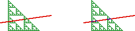

| The intersection of two sets, A and B, is the set consisting of all elements belonging to both sets. |
| For example, |
| A = {1,2,3}, B = {2,3,4,5}. Then A ∩ B = {2,3} |
| A is the square, B is the line segment, the smaller line segment is the intersection A ∩ B |
| There are other possibilities: the line segment could just touch the square in a single point, or miss the square completely. |
| A is the gasket, B is the line segment, the points in common are the intersection A ∩ B, here a very sparse set. |
|  |
Return to the algebra of dimensions.